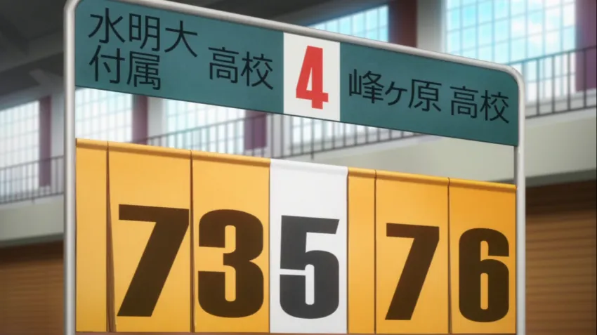

There is a particular scene in Sakurasou that references / similar to any racing anime or show
Seishun Buta Yarou wa Bunny Girl Senpai no Yume wo Minai, AKA Rascal Does Not Dream of Bunny Girl Senpai, referenced the school in Sakurasou No Pet Na Kanojo.

This image is from Seishun Buta Yarou, it shows the scoreboard of a basketball game that happened during the anime.
The name on the left side is 水明芸術大学附属高校, which means Suimei University Of The Arts. The school Kanda and Sorata attends.
© 2021 Calvin's Anime Site. All rights reserved.